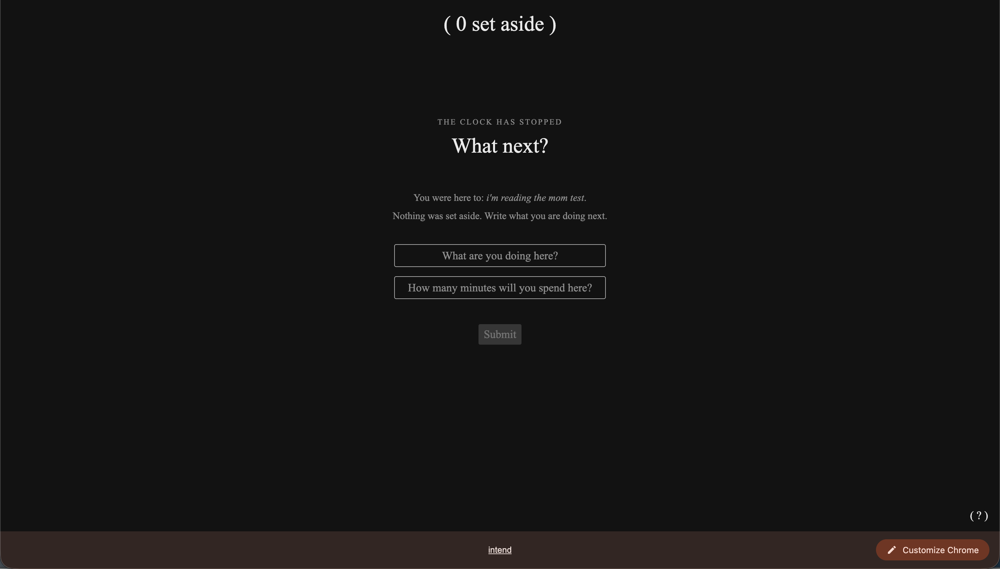
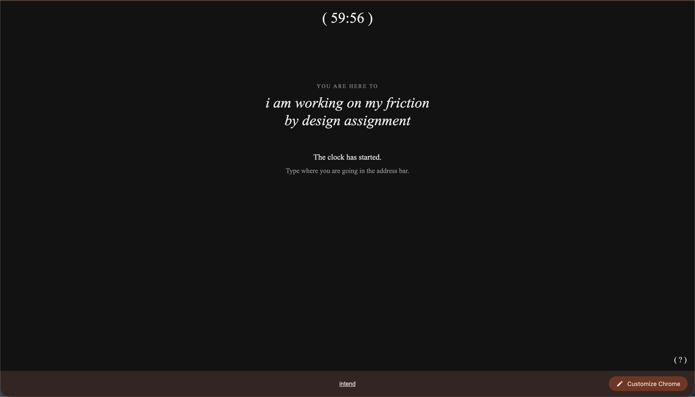
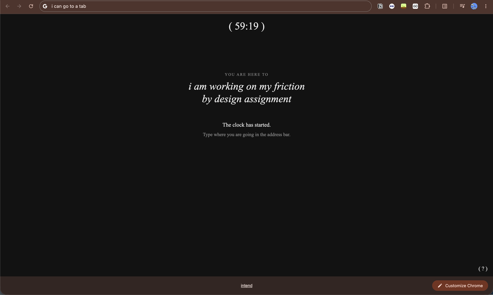
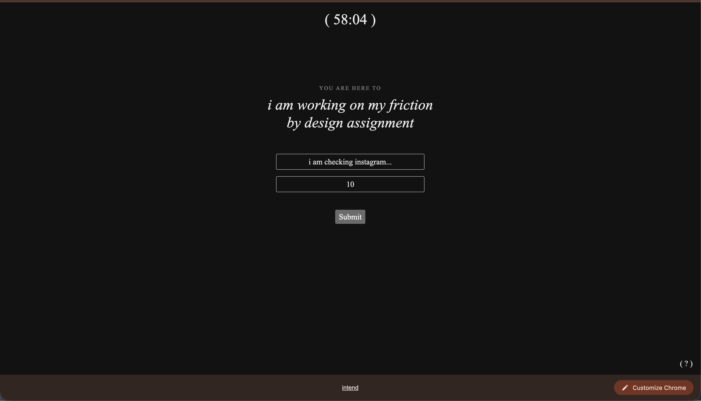
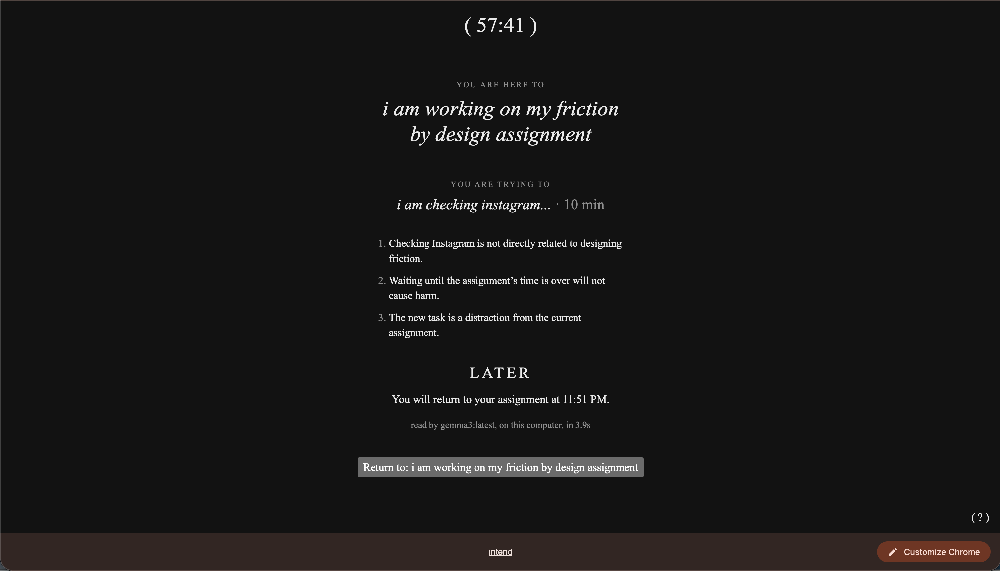

Prompt
Make an interactive digital project that uses AI to take an input, show computation, and output something. It should be accompanied by a short essay (min 300 words) describing the technology used, the strategic method applied, the user experience at the core, the risk, and the friction being applied (to be presented in class).
- Use friction in any method discussed in class to prevent a risk to the user - this risk may be real, presumed, hypothetical or contextual.
- Be ready for a design review and to present a formed rationale
- Please detail your choice of platform in your presentation
intend is a (vibe-coded using Claude Code) Chrome extension that asks what you’re doing before you open a new tab. A small, local AI model then decides whether the new task happens now or waits until your timer ends.
Technology used
Chosen Platform: Chrome extension
The platform I chose is a Chrome extension using plain HTML, CSS, and JavaScript. Most of my context-switching occurs in the web browser, and opening a new tab is the moment that I act on an impulse. An extension intervenes at that point: replacing Chrome’s new-tab page and can have a visible countdown timer on the toolbar icon.
Alternatives I considered included a desktop application that gates switching between apps and desktops. Another idea is one where you have to physically stand up, be seen by the camera, and say your reason out loud. But, for prototyping purposes, the Chrome extension was the easiest to begin with.
AI: local LLM
The AI is a local language model, specifically gemma3 (4 billion parameters), run locally by Ollama. It is free, works offline, and its latency (1.5-3 seconds) fits with the intended amount of friction in this use-case.
The form, the template the model’s answer must fit, which Ollama enforces via a pre-determined schema is:
- three reasons
- a verdict,
switchordefer - one sentence to the user
It is important that the reasoning occurs before the verdict, as the verdict follows from the reasoning.
Randomness is turned off so the same request always gets the same verdict (this is referring to temperature).
Input -> Computation -> Output
Input: an attempt to open a new tab, plus a written answer to What are you trying to do? and How many minutes will it take?
Computation: the model compares the new task with the current one, and its three reasons appear on the screen as it writes them.
Output: Switch (the tab opens) or Later (the task is set to a set-aside list and you’re sent back to your original tab)
Strategic method applied
I attempted to bring back the gap between impulse and action. Don Norman’s gulf of execution is the distance between wanting to do something and doing it. Shortcuts like Cmd+T have shrunk that gulf to nothing… its interaction cost — the physical and mental effort an action requires (Nielsen Norman Group) — is close to zero. Through my Chrome extension, I attempt to bring back a small, deliberate gulf: the time it takes to put the urge into words.
Here, writing the reason is the friction. Typing “check instagram” prompts me to reflect before I may even press the “submit” button, before the AI model even reads anything.
Making the computation visible was a deliberate choice. Showing the reasoning line by line, before the verdict, adds another form of friction: the user reflects during the time it takes for the response to populate.
User experience at the core
- Commit to a task. With no timer running, a new tab asks What are you doing here? and How many minutes will you spend here? Submitting starts a pomodoro-style countdown. This tab becomes your home tab.
- Keep the clock in view. The countdown stays on the toolbar icon.
- Try to switch. While the clock runs, any new tab asks What are you triyng to do? and How many minutes will it take?
- Read the verdict. Three reasons appear one at a time, then the verdict.
- Switch opens the tab where it was going.
- Later adds the task to the set-aside list, and one button takes you back to your home tab.
- Switch opens the tab where it was going.
- Later adds the task to the set-aside list, and one button takes you back to your home tab.
A switch that gets granted is one that is a direct part of the task currently being worked on.
User flow
New tab page

After typing my intent into the text box


Attempt to open a new tab whilst there is an ongoing task counting down

The newly proposed task gets evaluated, and in this case, deferred and accessible later.

The risk
Unexamined, compulsive context-switching fragments attention, especially with the seamless interfaces that have been normalized today.
Attention residue (Sophie Leroy) says that part of your attention stays on the previous task after a switch, so frequent switching degrades work even when each switch feels free and easy. Continuous partial attention (Linda Stone) is a chronic result of skimming, not learning. The machine zone (Natasha Dow Schull) is the trance-like state of continuous, uninterrupted interaction that slot machines are designed to produce. Tab-hopping is a mild version of this.
Paul Virilio wrote that every invention invents its accident. Compulsive switching is not the browser malfunctioning, but an accident that frictionless switching invented, and the browser produces it by working exactly as designed. The cause is structural, and the onus cannot be placed on the user; that is bad design.
Vannevar Bush’s memex was fast, but every jump in it was a deliberate, named link that left a record. On the other hand, browser tabs kept the speed and dropped the intention. intend’s set-aside list is a small version of that trail. Each entry records what you wanted, during which task, and why it is deferred for later.
The friction
intend adds friction at the specific moment you reach for a new tab. Before the clock starts, you write down what you’re doing and how long it will take. While it runs, every new tab asks what you’re trying to do and for how long, and a small local AI model reads that against your current task, showing its reasoning on screen before it decides. Most of the time it says Later.
Fast interfaces are not necessarily bad. Speed is great, but needs orientation. intend preserves the speed of the browser and asks for intention in return.